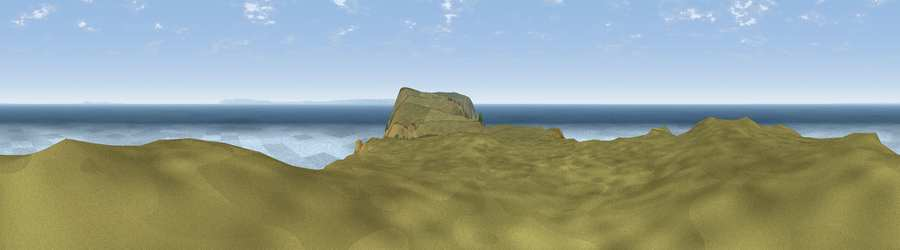

Viewpoint c2958_4264
#1772 in England · top 20% of its area beats it · —Where it is
The exact computed spot (SS 13325 47875). Click the marker for map links.
The view, rendered

A 360° render of this exact spot computed from the terrain model, tree cover and land cover — summer colours, afternoon light, calibrated against photographs of famous viewpoints. Real trees, hedges and buildings will differ in detail.
The panorama
Grey silhouette: terrain skyline in each direction (720 bearings, Earth curvature and refraction included). Dashed green: skyline with trees (+15 m) and buildings (+8 m) as obstacles. Blue strip: how far the ground is visible on each bearing.
Where the view opens
Wedge length = distance to the farthest visible ground on that bearing (vegetation-aware). Rings at 10, 25 and 50 km.
What fills the view
88% water · 11% grassland
Angular shares of the visible panorama (visual magnitude), not map area. Landscape diversity 0.17 (0–1 Shannon).
Key numbers
More beautiful places nearby
The staircase of upgrades: each row has a higher view potential than everything closer. Driving times are estimates from straight-line distance, calibrated against real road routing — check an actual route before setting out.
| Place | Direction | Drive | Score |
|---|---|---|---|
| Tibbett's Hill | SSE · 2 km | ~4 min | 80.5 |
| Viewpoint near Clovelly | SE · 29 km | ~46 min | 83.6 |
| Embury Beacon | SSE · 30 km | ~46 min | 83.8 |
| Viewpoint near Woolacombe | E · 33 km | ~51 min | 84.7 |
| Viewpoint near Combe Martin | E · 45 km | ~65 min | 86.9 |
| Viewpoint near Combe Martin | E · 46 km | ~67 min | 88.9 |
| Holdstone Hill | E · 48 km | ~69 min | 90.2 |
| The Knoll | ESE · 152 km | ~175 min | 91.0 |
51.19951, -4.67333 · source: screening · position refined by local search. Computed location — check access rights before visiting.